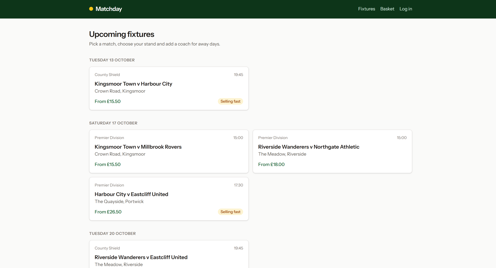
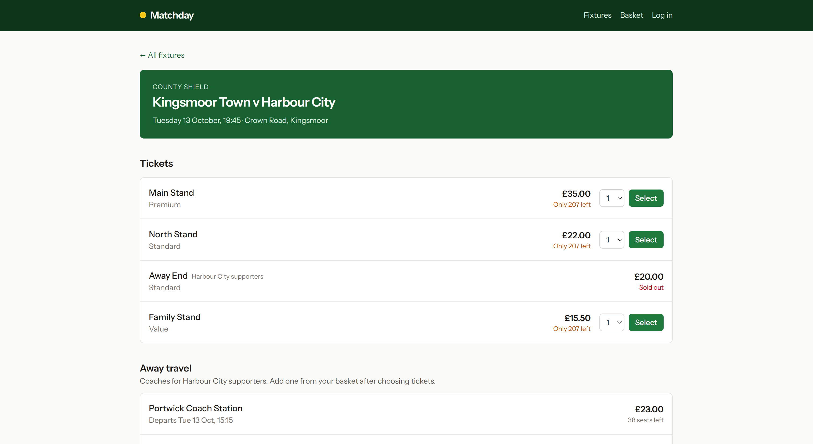
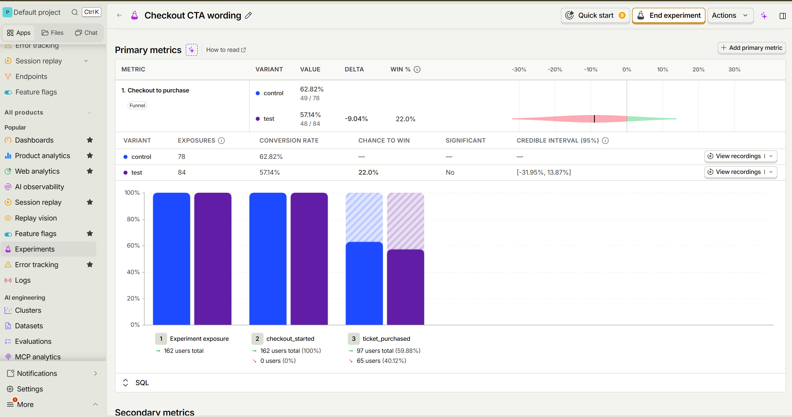

PostHog in a real Laravel app
Matchday is a football ticketing app built to show where product analytics belongs in a Laravel codebase: behind domain events, a contract and a queue, not scattered through controllers.
Analytics, identity, feature flags, an experiment, session replay, a survey and error tracking, all wired the Laravel way and all tested.
500 simulated supporters
People per funnel step, as PostHog counts them
- Viewed a fixture500
- Chose seats269
- Started checkout186
- Bought tickets106
view to purchase. Supporters browse anonymously and log in at checkout; aliasing the two IDs keeps them one person.
A shop with a funnel worth measuring
Supporters browse fixtures for invented clubs, pick a stand, add a coach for away days and pay with a test card. Every step has drop-off and there is money at the end, which makes each PostHog feature easy to explain.






One path for every event
Business code never mentions PostHog. It fires ordinary Laravel events, and one subscriber decides what analytics receives.
- TicketPurchased
- AnalyticsEventSubscriber
- Analytics contract
- queue
- PostHog
The contract has three implementations: PostHog, a null driver that can log every call locally, and a fake with assertions for tests. Architecture tests stop controllers and models from reaching past it.
Delivery survives the queue. Each event's time is fixed when it happens, so a backlog never shifts it, and each carries its own ID, so a retried job is not counted twice.
What is wired in
Each PostHog product, and the decision that makes it worth reading.
- Product analytics
- Domain events, one subscriber, a queued driver.Controllers never call PostHog, and a test enforces it.
- Identity
- Anonymous browsing is aliased to the account at login.Switch stitching off in the simulator and the funnel collapses to 0%.
- Groups
- Supporters' clubs as a PostHog group.Server and browser events both carry it.
- Feature flags
- A custom Laravel Pennant driver.App code calls
Feature::active()and never knows PostHog is the source. Without PostHog, fallbacks reproduce its bucketing exactly. - Experiments
- Two checkout button labels, chosen on the server.No flicker, and exposure is only recorded where the button is actually seen.
- Session replay
- posthog-js behind a consent banner.Nothing is recorded before consent, and card fields never are.
- Surveys
- An exit survey when the pointer leaves checkout.Answers are saved on the basket and sent to a PostHog API survey.
- Error tracking
- One hook in
withExceptions().Each error is linked to the person and the replay that led to it.
Run it locally
Docker does the heavy lifting. It runs without a PostHog account too, logging events locally instead.
make setupBuilds the containers, seeds the database and starts the app on port 8000.
make posthog-setupCreates the flags, experiment and survey in your PostHog project through its API.
make simulateSends 30 days of backdated supporter journeys, so every dashboard has data.
make duskDrives a real Chromium through the funnel for genuine client events and replays.
Built with
- Laravel 13 on PHP 8.4, MySQL 8.4
- Docker Compose with FrankenPHP, a queue worker and a scheduler
posthog-phpon the server,posthog-jsin the browser- Laravel Pennant for feature flags
- Blade, Tailwind 4 and Vite
- Pest, Laravel Dusk and
node --test